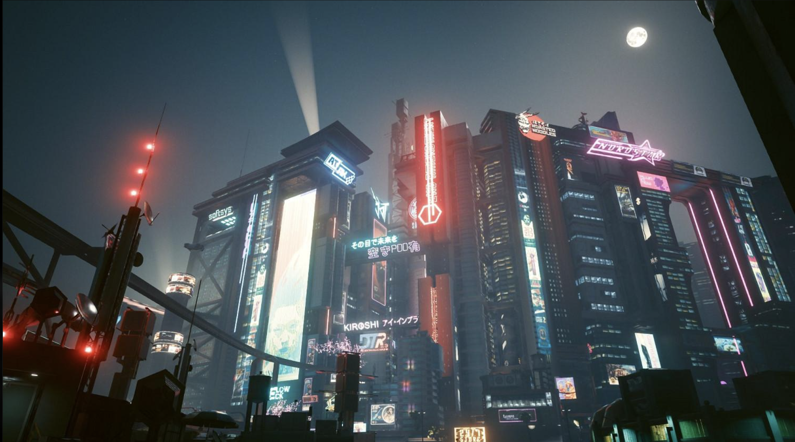
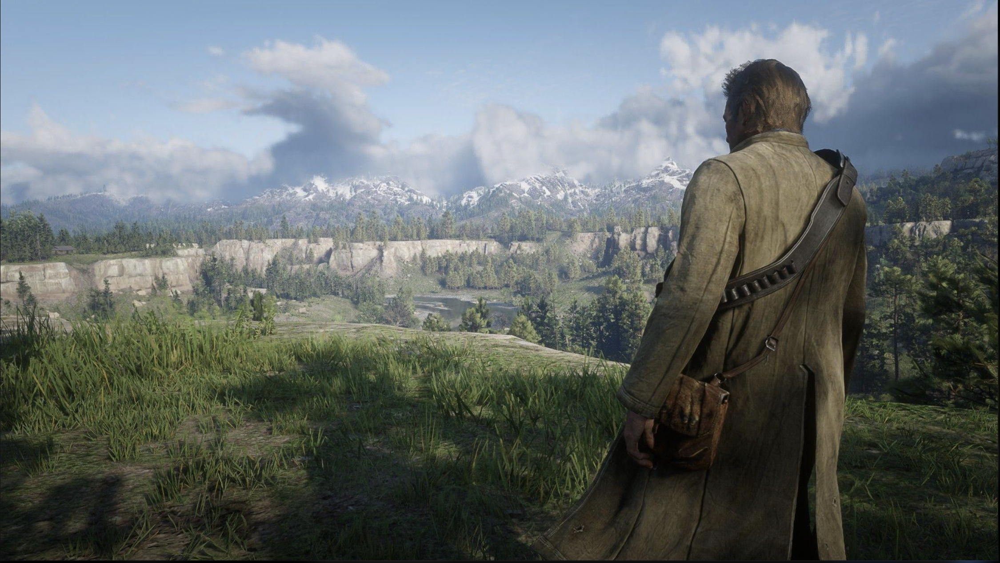
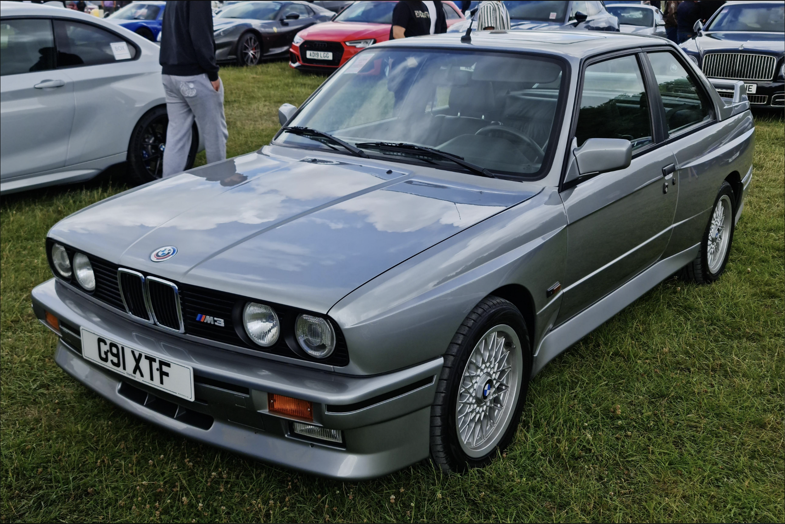
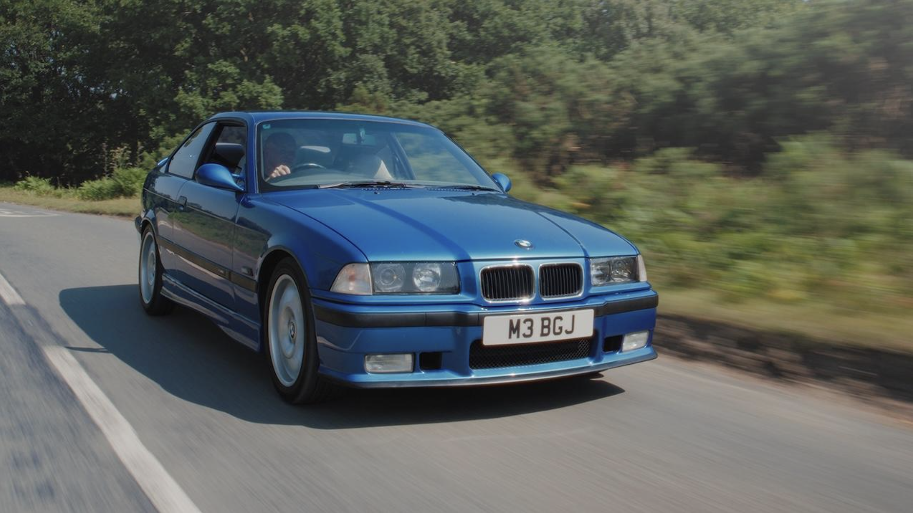

Hi! My name is Jack. I enjoy playing video games and learning about cars.

Cyberpunk 2077 is one of my favorite games. I enjoy its futuristic setting, characters, and the incredible atmosphere of Night City.

Red Dead Redemption II is another game I enjoy. I especially appreciate its storytelling, characters, exploration, and detailed open world.

Recently, I have become interested in cars, especially older BMW M models. The E30 M3 stands out to me because of its classic styling and connection to motorsport.
Photo: MrWalkr / Wikimedia Commons, CC BY-SA 4.0.

The E36 M3 is another BMW that I think looks great. I like comparing its styling with the E30, and owning or working on one could be an interesting future project.
Photo: Drift man / Wikimedia Commons, CC BY-SA 3.0.